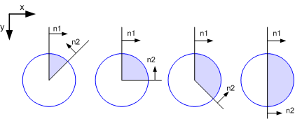
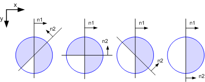

Rendering Functions
There is a rendering function for each supported geometric shape.
Rendering functions are the only functions that cause entries into the Render Buffers. Material and mode changes translate into hardware register access only when something is actually rendered.
| Rendering Functions | There is a rendering function for each supported geometric shape. |
| Direct Rendering | |
| d2_clear | Render fill the entire framebuffer with a single color. |
| d2_renderbox | Render a rectangle. |
| d2_renderline | Render a wide line. |
| d2_renderline2 | Render a wide line with 2 different widths. |
| d2_rendertri | Render a triangle. |
| d2_renderquad | Render a quadrangle. |
| d2_rendercircle | Render a circle or circle ring. |
| d2_renderwedge | Render a circle arc or circle ring arc. |
| Buffer Rendering | |
| d2_renderpolyline | Render a polyline |
| d2_renderpolyline2 | Render a polyline with multiple width |
| d2_rendertrilist | Render a polygon from a triangle list. |
| d2_rendertristrip | Render a polygon from a triangle strip. |
| d2_rendertrifan | Render a polygon from a triangle fan |
| d2_renderpolygon | Render a convex polygon |
d2_clear
d2_s32 d2_clear( d2_device * handle, d2_color color )
Render fill the entire framebuffer with a single color.
The current cliprect is used to determine framebuffer dimensions. Clearing is the only function that bypasses the current solid context and renders plain color - regardless of blendmodes, fillmodes and other attributes.
Because clearing does bypass the context material settings it is the only function that includes both alpha and color in the 32bit ‘color’ argument. The most significant byte is used to fill the framebuffer alpha channel if one is present.
To clear using all context attributes simply use d2_renderbox.
parameters
| handle | device pointer (see: d2_opendevice) |
| color | fill color and alpha |
returns
errorcode (D2_OK if successfull) see list of Errorcodes for details
d2_renderbox
d2_s32 d2_renderbox( d2_device * handle, d2_point x1, d2_point y1, d2_width w, d2_width h )
Render a rectangle.
Nothing is rendered if width or height are 0. Subpixel positions and fractional sizes are supported.
parameters
| handle | device pointer (see: d2_opendevice) |
| x1,y1 | top left corner (fixedpoint) |
| w | width of rectangle in pixels (fixedpoint) |
| h | height of rectangle in pixels (fixedpoint) |
returns
errorcode (D2_OK if successfull) see list of Errorcodes for details
d2_renderline
d2_s32 d2_renderline( d2_device * handle, d2_point x1, d2_point y1, d2_point x2, d2_point y2, d2_width w, d2_u32 flags )
Render a wide line.
Subpixel positions and fractional widths are supported.
To modify the lineend styles use d2_setlinecap, but note that only included endpoints will get a cap. So if d2_lf_exclude_end is specified and linecap is set to round - the endpoint will not get rounded.
parameters
| handle | device pointer (see: d2_opendevice) |
| x1,y1 | startpoint (fixedpoint) |
| x2,y2 | endpoint (fixedpoint) |
| w | width of line in pixels (fixedpoint) |
| flags | additional lineend flags |
lineend flags
| d2_le_exclude_start | startpoint is not part of the line |
| d2_le_exclude_end | endpoint is not part of the line |
| d2_le_exclude_none | start and endpoint are part of the line |
| d2_le_exclude_both | start and endpoint are not part of the line |
returns
errorcode (D2_OK if successfull) see list of Errorcodes for details
see also
d2_renderline2
d2_s32 d2_renderline2( d2_device * handle, d2_point x1, d2_point y1, d2_point x2, d2_point y2, d2_width w1, d2_width w2, d2_u32 flags )
Render a wide line with 2 different widths.
Line can have two different width at start and endpoint, forming a trapezoid. If both widths are equal it is faster to use d2_renderline instead. Subpixel positions and fractional widths are supported.
To modify the lineend styles use d2_setlinecap, but note that only included endpoints will get a cap. So if d2_lf_exclude_end is specified and linecap is set to round - the endpoint will not get rounded.
parameters
| handle | device pointer (see: d2_opendevice) |
| x1,y1 | startpoint (fixedpoint) |
| x2,y2 | endpoint (fixedpoint) |
| w1 | width of line in pixels at startpoint (fixedpoint) |
| w2 | width of line in pixels at endpoint (fixedpoint) |
| flags | additional lineend flags |
lineend flags
| d2_le_exclude_start | startpoint is not part of the line |
| d2_le_exclude_end | endpoint is not part of the line |
| d2_le_exclude_none | start and endpoint are part of the line |
| d2_le_exclude_both | start and endpoint are not part of the line |
returns
errorcode (D2_OK if successfull) see list of Errorcodes for details
see also
d2_rendertri
d2_s32 d2_rendertri( d2_device * handle, d2_point x1, d2_point y1, d2_point x2, d2_point y2, d2_point x3, d2_point y3, d2_u32 flags )
Render a triangle.
Triangles must be specified with clockwise orientation. Subpixel positions are supported. In order to get correct antialiasing and outlines shared edges must be specified using edge flags.
parameters
| handle | device pointer (see: d2_opendevice) |
| x1,y1 | first point (fixedpoint) |
| x2,y2 | second point (fixedpoint) |
| x3,y3 | third point (fixedpoint) |
| flags | triangle edge flags |
triangle edge flags
| d2_edge0_shared | edge from (x1,y1) - (x2,y2) is shared |
| d2_edge1_shared | edge from (x2,y2) - (x3,y3) is shared |
| d2_edge2_shared | edge from (x3,y3) - (x1,y1) is shared |
returns
errorcode (D2_OK if successfull) see list of Errorcodes for details
d2_renderquad
d2_s32 d2_renderquad( d2_device * handle, d2_point x1, d2_point y1, d2_point x2, d2_point y2, d2_point x3, d2_point y3, d2_point x4, d2_point y4, d2_u32 flags )
Render a quadrangle.
A quadrangle is a convex four-sided polygon (quadrilateral is the precise mathematical term). Quadrangles must be specified with clockwise orientation. Subpixel positions are supported. In order to get correct antialiasing and outlines shared edges must be specified using edge flags.
parameters
| handle | device pointer (see: d2_opendevice) |
| x1,y1 | first point (fixedpoint) |
| x2,y2 | second point (fixedpoint) |
| x3,y3 | third point (fixedpoint) |
| x4,y4 | fourth point (fixedpoint) |
| flags | quadrangle edge flags |
triangle edge flags
| d2_edge0_shared | edge from (x1,y1) - (x2,y2) is shared |
| d2_edge1_shared | edge from (x2,y2) - (x3,y3) is shared |
| d2_edge2_shared | edge from (x3,y3) - (x4,y4) is shared |
| d2_edge3_shared | edge from (x4,y4) - (x1,y1) is shared |
returns
errorcode (D2_OK if successfull) see list of Errorcodes for details
d2_rendercircle
d2_s32 d2_rendercircle( d2_device * handle, d2_point x, d2_point y, d2_width r, d2_width w )
Render a circle or circle ring.
Circles are directly rasterized and not reduced to linear parts by the hardware. Subpixel positions, radii and widths are supported. Nonantialiased circle rings with a fractional width below 1 pixel will have drop outs (missing pixels).
parameters
| handle | device pointer (see: d2_opendevice) |
| x,y | center (fixedpoint) |
| r | radius (fixedpoint) |
| w | width or 0 for a solid circle (fixedpoint) |
returns
errorcode (D2_OK if successfull) see list of Errorcodes for details
d2_renderwedge
d2_s32 d2_renderwedge( d2_device * handle, d2_point x, d2_point y, d2_width r, d2_width w, d2_s32 nx1, d2_s32 ny1, d2_s32 nx2, d2_s32 ny2, d2_u32 flags )
Render a circle arc or circle ring arc.
Same as d2_rendercircle but clipped by two additional linear boundaries, resulting in an arc. As default the two half planes form an intersected area for the clipping region. For angles > 180 deg the flag d2_wf_concave must be used. When the flag d2_wf_concave is set the two half planes form a united, concave area. In order to get correct antialiasing and outlines shared edges must be specified using edge flags (only linear edges can be shared).
parameters
| handle | device pointer (see: d2_opendevice) |
| x,y | center (fixedpoint) |
| r | radius (fixedpoint) |
| w | width or 0 for a solid circle (fixedpoint) |
| nx1, ny1 | normal vector of first edge (16:16 fixedpoint) |
| nx2, ny2 | normal vector of second edge (16:16 fixedpoint) |
| flags | edge sharing and concave flags |
circle wedge flags
| d2_edge0_shared | first edge is shared |
| d2_edge1_shared | second edge is shared |
| d2_wf_concave | defines that the clipping region forms a united area for angles > 180 deg |
returns
errorcode (D2_OK if successful) see list of Errorcodes for details
note
d2_renderwedge internally calls d2_setclipgradient for drawing wedges and will overwrite the clip gradient settings!
remarks
The figure below shows four examples of different wedges and the corresponding normal vectors (n1, n2). In order to get correct antialiasing all vectors must be normalized to a length of one.
example
... d2_setcolor(handle, 0, 0x0000ff); d2_renderwedge(handle, 100<<4, 100<<4, 50<<4, 0, 1<<16, 0<<16, -46340, -46340, 0); d2_renderwedge(handle, 200<<4, 100<<4, 50<<4, 0, 1<<16, 0<<16, 0<<16, -1<<16, 0); d2_renderwedge(handle, 300<<4, 100<<4, 50<<4, 0, 1<<16, 0<<16, 46340, -46340, 0); d2_renderwedge(handle, 400<<4, 100<<4, 50<<4, 0, 1<<16, 0<<16, 1<<16, 0<<16, 0); ...
remarks
The figure below shows the same examples but with d2_wf_concave set.
example
... d2_setcolor(handle, 0, 0x0000ff); d2_renderwedge(handle, 100<<4, 100<<4, 50<<4, 0, 1<<16, 0<<16, -46340, -46340, d2_wf_concave); d2_renderwedge(handle, 200<<4, 100<<4, 50<<4, 0, 1<<16, 0<<16, 0<<16, -1<<16, d2_wf_concave); d2_renderwedge(handle, 300<<4, 100<<4, 50<<4, 0, 1<<16, 0<<16, 46340, -46340, d2_wf_concave); d2_renderwedge(handle, 400<<4, 100<<4, 50<<4, 0, 1<<16, 0<<16, 1<<16, 0<<16, d2_wf_concave); ...
d2_renderpolyline
d2_s32 d2_renderpolyline( d2_device * handle, const d2_point * data, d2_u32 count, d2_width w, d2_u32 flags )
Render a polyline
Line segments inside the polyline are connected as defined by d2_setlinejoin and endpoints of the polyline are using the current linecap style set by d2_setlinecap. If the line is closed (d2_le_closed) it has no endpoints and therefore no linecaps.
parameters
| handle | device pointer (see: d2_opendevice) |
| data | pointer to an array of 2*’count’ d2_point values (‘count’ x,y pairs) |
| count | number of vertices |
| w | width of polyline |
| flags | additional lineend flags |
lineend flags
| d2_le_exclude_start | first point is not part of the polyline |
| d2_le_exclude_end | last point is not part of the polyline |
| d2_le_closed | polyline has no start or endpoint, last vertex is connected back to first |
returns
errorcode (D2_OK if successfull) see list of Errorcodes for details
see also
d2_renderpolyline2
d2_s32 d2_renderpolyline2( d2_device * handle, const d2_point * data, d2_u32 count, const d2_width * w, d2_u32 flags )
Render a polyline with multiple width
Similar to d2_renderpolyline but a width can be supplied for each vertex. Line segments inside the polyline are connected by round line joins and endpoints of the polyline are using the current linecap style set by d2_setlinecap. If the line is closed (d2_le_closed) it has no endpoints and therefore no linecaps.
parameters
| handle | device pointer (see: d2_opendevice) |
| data | pointer to an array of 2*’count’ d2_point values (‘count’ x,y pairs) |
| count | number of vertices |
| w | pointer width to an array of ‘count’ d2_width values (width for each vertex) |
| flags | additional lineend flags |
lineend flags
| d2_le_exclude_start | first point is not part of the polyline |
| d2_le_exclude_end | last point is not part of the polyline |
| d2_le_closed | polyline has no start or endpoint, last vertex is connected back to first |
returns
errorcode (D2_OK if successfull) see list of Errorcodes for details
see also
d2_rendertrilist
d2_s32 d2_rendertrilist( d2_device * handle, const d2_point * data, const d2_u32 * flags, d2_u32 count )
Render a polygon from a triangle list.
Each triangle must be defined in clockwise order. In order to get correct antialiasing and outlines, shared edges must be specified using edge flags (see: d2_rendertri for flag definition). There is one flagbyte per triangle. If no sharing is required (e.g. no antialiasing) you can pass NULL for the ‘flags’ pointer.

For each triangle 3 vertices are specified in the data array.
parameters
| handle | device pointer (see: d2_opendevice) |
| data | pointer to an array of 6*count d2_point values (3*count x,y pairs) |
| flags | pointer to an array to count bytes containing edgesharing flags or NULL. If NULL is passed it is assumed that no edges are shared. |
| count | number of triangles |
returns
errorcode (D2_OK if successfull) see list of Errorcodes for details
see also
d2_rendertristrip
d2_s32 d2_rendertristrip( d2_device * handle, const d2_point * data, const d2_u32 * flags, d2_u32 count )
Render a polygon from a triangle strip.
When rendering connected structures using a set of triangles a triangle strip can be used instead of a triangle list (d2_rendertrilist). The advantage is that for every triangle except the first one only one additional vertex has to be specified. The other two vertices are reused from the previous triangle. See diagram for explanation:

Triangles rendered from the order given above are :
- 1,2,3
- 2,4,3
- 3,4,5
- 4,6,5
Note that every second triangle is flipped automatically in order to keep them all in clockwise orientation. Internal edges are automatically flagged as shared but you can still specify a flag for each triangle in order to define additional shared edges. There is one flagbyte per triangle. If no additional sharing information is required you can pass NULL for the ‘flags’ pointer.
The first triangle must be defined in clockwise order (others will then be clockwise as well).
parameters
| handle | device pointer (see: d2_opendevice) |
| data | pointer to an array of 2*count+4 d2_point values (count+2 x,y pairs) |
| flags | pointer to an array to count bytes containing edgesharing flags or NULL |
| count | number of triangles |
returns
errorcode (D2_OK if successfull) see list of Errorcodes for details
see also
d2_rendertrifan
d2_s32 d2_rendertrifan( d2_device * handle, const d2_point * data, const d2_u32 * flags, d2_u32 count )
Render a polygon from a triangle fan
When rendering connected structures where all triangles share a common vertex a triangle fan can be used instead of a triangle list (d2_rendertrilist). The advantage is that for every triangle except the first one only one additional vertex has to be specified. The other two vertices are reused from the previous triangle and the common base vertex. See diagram for explanation:

Triangles rendered from the order given above are :
- 1,2,3
- 1,3,4
- 1,4,5
Internal edges are automatically flagged as shared but you can still specify a flag for each triangle in order to define additional shared edges. There is one flagbyte per triangle. If no additional sharing information is required you can pass NULL for the ‘flags’ pointer.
The first triangle must be defined in clockwise order (others will then be clockwise as well).
parameters
| handle | device pointer (see: d2_opendevice) |
| data | pointer to an array of 2*count+4 d2_point values (count+2 x,y pairs) |
| flags | pointer to an array to count bytes containing edgesharing flags or NULL |
| count | number of triangles |
returns
errorcode (D2_OK if successfull) see list of Errorcodes for details
see also
d2_renderpolygon
d2_s32 d2_renderpolygon( d2_device * handle, const d2_point * data, d2_u32 count, d2_u32 flags )
Render a convex polygon
All vertices have to be in clockwise order. If seperation into monoton subregions is required, internal edges will be flagged as ‘shared’ automatically. Outer edges are always nonshared for now.
parameters
| handle | device pointer (see: d2_opendevice) |
| data | pointer to an array of d2_point values (count x,y pairs) |
| count | number of points |
| flags | reserved (should be NULL) |
returns
errorcode (D2_OK if successfull) see list of Errorcodes for details